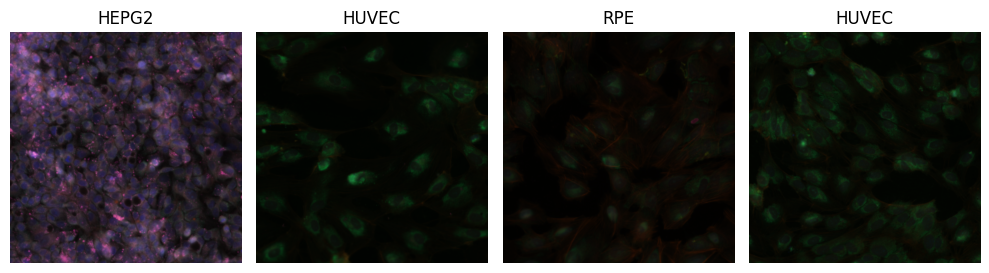
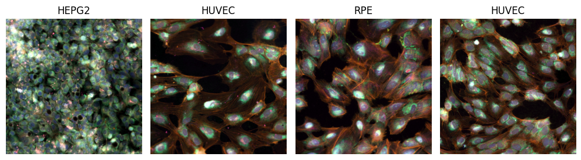

!python -c "import monai" || pip install -q "monai-weekly"Multispectral Classification - MONAI/pytorch
Copyright (c) MONAI Consortium
Licensed under the Apache License, Version 2.0 (the “License”);
you may not use this file except in compliance with the License.
You may obtain a copy of the License at
http://www.apache.org/licenses/LICENSE-2.0
Unless required by applicable law or agreed to in writing, software
distributed under the License is distributed on an “AS IS” BASIS,
WITHOUT WARRANTIES OR CONDITIONS OF ANY KIND, either express or implied.
See the License for the specific language governing permissions and
limitations under the License.
Setup environment
Setup imports
import os
import pprint
import pandas as pd
import matplotlib.pyplot as plt
import numpy as np
import torch
from sklearn.metrics import classification_report
from monai.apps import download_and_extract
from monai.config import print_config
from monai.data import Dataset, CacheDataset, DataLoader, ThreadDataLoader
from monai.metrics import ROCAUCMetric
from monai.networks.nets import DenseNet169
from monai.transforms import (
Activations,
AsDiscrete,
EnsureChannelFirstd,
EnsureTyped,
Compose,
ConcatItemsd,
LoadImaged,
RandFlipd,
RandRotate90d,
RandZoomd,
ScaleIntensityRangePercentilesd,
)
from monai.utils import set_determinism
print_config()MONAI version: 1.5.2
Numpy version: 2.4.2
Pytorch version: 2.6.0
MONAI flags: HAS_EXT = False, USE_COMPILED = False, USE_META_DICT = False
MONAI rev id: d18565fb3e4fd8c556707f91ac280a2dc3f681c1
MONAI __file__: /home/<username>/miniforge3/envs/biomonai_ignite/lib/python3.11/site-packages/monai/__init__.py
Optional dependencies:
Pytorch Ignite version: 0.5.3
ITK version: NOT INSTALLED or UNKNOWN VERSION.
Nibabel version: 5.3.3
scikit-image version: 0.26.0
scipy version: 1.17.0
Pillow version: 12.1.1
Tensorboard version: NOT INSTALLED or UNKNOWN VERSION.
gdown version: NOT INSTALLED or UNKNOWN VERSION.
TorchVision version: NOT INSTALLED or UNKNOWN VERSION.
tqdm version: 4.67.3
lmdb version: NOT INSTALLED or UNKNOWN VERSION.
psutil version: 7.2.2
pandas version: 3.0.0
einops version: 0.8.2
transformers version: NOT INSTALLED or UNKNOWN VERSION.
mlflow version: NOT INSTALLED or UNKNOWN VERSION.
pynrrd version: NOT INSTALLED or UNKNOWN VERSION.
clearml version: NOT INSTALLED or UNKNOWN VERSION.
For details about installing the optional dependencies, please visit:
https://docs.monai.io/en/latest/installation.html#installing-the-recommended-dependencies
Download Rxrx1 subset data
The original Rxrx1 dataset is very large (45 GB) and designed for prediction of more than 1000 classes. To avoid lengthy download times, we will utilize a subset of Rxrx1, which was sampled in a random and balanced manner. For practical purposes, the classification target is changed from sirna_id (>1000 classes) to cell_type (4 classes). For each of the 4 cell types (HEPG2/HUVEC/RPE/U2OS), 250 samples were randomly selected for training (1000 samples total) and 50 for testing (200 samples total).
We are first going to download the dataset and then load the metadata.csv table to create training and test dataframes.
Note: The original Rxrx1 sample indices are stored in the column original_row_index in file ./rxrx1_subset_monai/metadata.csv.
url = "https://github.com/Project-MONAI/MONAI-extra-test-data/releases/download/0.8.1/rxrx1_subset_monai.zip"
download_and_extract(
url, filepath="./rxrx1_subset_monai.zip", output_dir=".", hash_val="5eea02f6b0a6d8cbce6ad66949257438"
)rxrx1_subset_monai.zip: 468MB [02:25, 3.38MB/s] 2026-04-08 22:34:42,209 - INFO - Downloaded: rxrx1_subset_monai.zip2026-04-08 22:34:42,666 - INFO - Verified 'rxrx1_subset_monai.zip', md5: 5eea02f6b0a6d8cbce6ad66949257438.
2026-04-08 22:34:42,666 - INFO - Writing into directory: ..Prepare dataframes and datalists
We use pandas to read the metadata.csv file and split the data into train/test sets.
df_all = pd.read_csv("./rxrx1_subset_monai/metadata.csv")
dftrain = df_all.loc[df_all.dataset == "train", :].reset_index()
dftest = df_all.loc[df_all.dataset == "test", :].reset_index()
class_map = {c: idx for idx, c in enumerate(dftrain.cell_type.unique())}
class_map_inv = dict(enumerate(dftrain.cell_type.unique()))
num_classes = len(class_map)
class_names = list(class_map.keys())
print(dftrain.columns)
dftrainIndex(['index', 'original_row_index', 'site_id', 'well_id', 'cell_type',
'dataset', 'experiment', 'plate', 'well', 'site', 'well_type', 'sirna',
'sirna_id'],
dtype='str')| index | original_row_index | site_id | well_id | cell_type | dataset | experiment | plate | well | site | well_type | sirna | sirna_id | |
|---|---|---|---|---|---|---|---|---|---|---|---|---|---|
| 0 | 0 | 45589 | HEPG2-01_3_C15_2 | HEPG2-01_3_C15 | HEPG2 | train | HEPG2-01 | 3 | C15 | 2 | positive_control | s15652 | 1114 |
| 1 | 1 | 59951 | HEPG2-07_2_H02_2 | HEPG2-07_2_H02 | HEPG2 | train | HEPG2-07 | 2 | H02 | 2 | treatment | s195435 | 683 |
| 2 | 2 | 48708 | HEPG2-02_4_D13_1 | HEPG2-02_4_D13 | HEPG2 | train | HEPG2-02 | 4 | D13 | 1 | treatment | s20197 | 85 |
| 3 | 3 | 46896 | HEPG2-02_1_E09_1 | HEPG2-02_1_E09 | HEPG2 | train | HEPG2-02 | 1 | E09 | 1 | treatment | s27069 | 313 |
| 4 | 4 | 60402 | HEPG2-07_3_D09_1 | HEPG2-07_3_D09 | HEPG2 | train | HEPG2-07 | 3 | D09 | 1 | treatment | s18250 | 405 |
| ... | ... | ... | ... | ... | ... | ... | ... | ... | ... | ... | ... | ... | ... |
| 995 | 995 | 123921 | U2OS-03_2_G21_2 | U2OS-03_2_G21 | U2OS | train | U2OS-03 | 2 | G21 | 2 | treatment | s37346 | 1046 |
| 996 | 996 | 121453 | U2OS-02_2_G19_2 | U2OS-02_2_G19 | U2OS | train | U2OS-02 | 2 | G19 | 2 | treatment | s38759 | 164 |
| 997 | 997 | 119034 | U2OS-01_2_H20_1 | U2OS-01_2_H20 | U2OS | train | U2OS-01 | 2 | H20 | 1 | treatment | s21714 | 785 |
| 998 | 998 | 118168 | U2OS-01_1_C05_1 | U2OS-01_1_C05 | U2OS | train | U2OS-01 | 1 | C05 | 1 | treatment | s19455 | 999 |
| 999 | 999 | 123966 | U2OS-03_2_H22_1 | U2OS-03_2_H22 | U2OS | train | U2OS-03 | 2 | H22 | 1 | positive_control | s502431 | 1133 |
1000 rows × 13 columns
Create datalists for training and validation
These are lists of dictionaries, with image dict-keys pointing to filepaths, plus a label dict-key.
To construct the filepaths, we follow the same folder- and filenaming pattern from the full Rxrx1 dataset.
(Note: For details, please find instructions in ./rxrx1_subset_monai/README.md#metadata)
base_path_rxrx1 = os.path.join(".", "rxrx1_subset_monai")
datalists = []
for df in [dftrain, dftest]:
datalist = []
for row in range(df.shape[0]):
d = {}
s = df.loc[row, :]
filepaths = []
for c in [1, 2, 3, 4, 5, 6]:
subpath = os.path.join("images", s.experiment, f"Plate{s.plate}")
fn = f"{s.well}_s{s.site}_w{c}.png"
d[f"c{c}"] = os.path.join(base_path_rxrx1, subpath, fn)
d["label"] = class_map[s.cell_type]
datalist.append(d)
datalists.append(datalist)
datalist_train, datalist_test = tuple(datalists)
# print 3 example train samples
pp = pprint.PrettyPrinter()
pp.pprint(datalist_train[:3])[{'c1': './rxrx1_subset_monai/images/HEPG2-01/Plate3/C15_s2_w1.png',
'c2': './rxrx1_subset_monai/images/HEPG2-01/Plate3/C15_s2_w2.png',
'c3': './rxrx1_subset_monai/images/HEPG2-01/Plate3/C15_s2_w3.png',
'c4': './rxrx1_subset_monai/images/HEPG2-01/Plate3/C15_s2_w4.png',
'c5': './rxrx1_subset_monai/images/HEPG2-01/Plate3/C15_s2_w5.png',
'c6': './rxrx1_subset_monai/images/HEPG2-01/Plate3/C15_s2_w6.png',
'label': 0},
{'c1': './rxrx1_subset_monai/images/HEPG2-07/Plate2/H02_s2_w1.png',
'c2': './rxrx1_subset_monai/images/HEPG2-07/Plate2/H02_s2_w2.png',
'c3': './rxrx1_subset_monai/images/HEPG2-07/Plate2/H02_s2_w3.png',
'c4': './rxrx1_subset_monai/images/HEPG2-07/Plate2/H02_s2_w4.png',
'c5': './rxrx1_subset_monai/images/HEPG2-07/Plate2/H02_s2_w5.png',
'c6': './rxrx1_subset_monai/images/HEPG2-07/Plate2/H02_s2_w6.png',
'label': 0},
{'c1': './rxrx1_subset_monai/images/HEPG2-02/Plate4/D13_s1_w1.png',
'c2': './rxrx1_subset_monai/images/HEPG2-02/Plate4/D13_s1_w2.png',
'c3': './rxrx1_subset_monai/images/HEPG2-02/Plate4/D13_s1_w3.png',
'c4': './rxrx1_subset_monai/images/HEPG2-02/Plate4/D13_s1_w4.png',
'c5': './rxrx1_subset_monai/images/HEPG2-02/Plate4/D13_s1_w5.png',
'c6': './rxrx1_subset_monai/images/HEPG2-02/Plate4/D13_s1_w6.png',
'label': 0}]Writing a custom image converter for visualization
For visualization of the 6-channel images, we need to convert them to RGB (3-channel) images first.
We write a custom function, which assumes 6-channel image inputs (as channel-first).
For conversion of channels to colors, we follow the color-mapping described and visualized on the Rxrx1 website (i.e. Figure 6 in https://www.rxrx.ai/rxrx1#the-data):
- Nuclei -> blue
- Endoplasmic reticuli -> green
- Actin -> red
- Nucleoli -> cyan
- Mitochondria -> magenta
- Golgi apparatus -> yellow
def img_6to3_channel(img6ch):
img = torch.zeros((img6ch.shape[1], img6ch.shape[2], 3))
# nuclei (blue)
img[:, :, 2] += img6ch[0, :, :]
# endoplasmic reticuli (green)
img[:, :, 1] += img6ch[1, :, :]
# actin (red)
img[:, :, 0] += img6ch[2, :, :]
# nucleoli (cyan)
img[:, :, 1] += img6ch[3, :, :]
img[:, :, 2] += img6ch[3, :, :]
# mitochondria (magenta)
img[:, :, 0] += img6ch[4, :, :]
img[:, :, 2] += img6ch[4, :, :]
# golgi apparatus (yellow)
img[:, :, 0] += img6ch[5, :, :]
img[:, :, 1] += img6ch[5, :, :]
# normalize RGB channels
img = img / 3.0
return imgRobust multi-channel normalization during pre-processing
Each multi-spectral channel has a different range of intensities, and there might be variation across the multi-well plates, across batches, or across experiments. If not properly accounted for, the input to the neural networks has a lot of variation in the individual channels which might affect classification performance.
In the following two code cells, we are going to load a few sample images, and visualize them in two ways: 1. Without any pre-processing (note: when passing multi-spectral images to the visualization function, we still need to divide intensities by 255.0, to bring pixels from the range [0, 255] to the expected color range [0.0, 1.0]). 2. With a more suitable pre-processing: robust normalization of the [1,99]-percentile intensity ranges, individually per channel, to the output range [0.0, 1.0] (with clipping). This process is also called winsorization and is a useful technique for robust intensity normalization in medical imaging. We use the intensity transform ScaleIntensityRangePercentilesd from MONAI Core for winsorization.
# visualize test batch without normalization
set_determinism(seed=0)
transforms_visualize = Compose(
[
LoadImaged(keys=["c1", "c2", "c3", "c4", "c5", "c6"], image_only=True),
EnsureChannelFirstd(keys=["c1", "c2", "c3", "c4", "c5", "c6"]),
ConcatItemsd(keys=["c1", "c2", "c3", "c4", "c5", "c6"], name="image", dim=0),
]
)
batch_size_viz = 4
viz_ds = Dataset(datalist_train, transform=transforms_visualize)
viz_loader = DataLoader(viz_ds, batch_size=batch_size_viz, shuffle=True, num_workers=0)
batch_data = next(iter(viz_loader))
fig, axs = plt.subplots(1, batch_size_viz, figsize=(10, 10 * batch_size_viz), dpi=100)
for idx, img6ch in enumerate(batch_data["image"]):
axs[idx].imshow(img_6to3_channel(img6ch) / 255.0)
axs[idx].set_axis_off()
axs[idx].set_title(class_map_inv[int(batch_data["label"][idx])])
fig.set_tight_layout(True)
# fig.savefig('./batch_without_normalization.png',bbox_inches='tight')
plt.show()
# visualize test batch with normalization
set_determinism(seed=0)
transforms_visualize = Compose(
[
LoadImaged(keys=["c1", "c2", "c3", "c4", "c5", "c6"], image_only=True),
EnsureChannelFirstd(keys=["c1", "c2", "c3", "c4", "c5", "c6"]),
ScaleIntensityRangePercentilesd(
keys=["c1", "c2", "c3", "c4", "c5", "c6"], lower=1.0, upper=99.0, b_min=0.0, b_max=1.0, clip=True
),
ConcatItemsd(keys=["c1", "c2", "c3", "c4", "c5", "c6"], name="image", dim=0),
]
)
batch_size_viz = 4
viz_ds = Dataset(datalist_train, transform=transforms_visualize)
viz_loader = DataLoader(viz_ds, batch_size=batch_size_viz, shuffle=True, num_workers=0)
batch_data = next(iter(viz_loader))
fig, axs = plt.subplots(1, batch_size_viz, figsize=(10, 10 * batch_size_viz), dpi=100)
for idx, img6ch in enumerate(batch_data["image"]):
axs[idx].imshow(img_6to3_channel(img6ch))
axs[idx].set_axis_off()
axs[idx].set_title(class_map_inv[int(batch_data["label"][idx])])
fig.set_tight_layout(True)
# fig.savefig('./batch_with_normalization.png',bbox_inches='tight')
plt.show()
Set deterministic training for reproducibility
set_determinism(seed=0)Create transforms, CacheDataset and DataLoader
transforms_train = Compose(
[
LoadImaged(keys=["c1", "c2", "c3", "c4", "c5", "c6"], image_only=True),
EnsureChannelFirstd(keys=["c1", "c2", "c3", "c4", "c5", "c6"]),
ScaleIntensityRangePercentilesd(
keys=["c1", "c2", "c3", "c4", "c5", "c6"], lower=1.0, upper=99.0, b_min=0.0, b_max=1.0, clip=True
),
ConcatItemsd(keys=["c1", "c2", "c3", "c4", "c5", "c6"], name="image", dim=0),
EnsureTyped(keys=["image", "label"], track_meta=False),
RandRotate90d(keys=["c1", "c2", "c3", "c4", "c5", "c6"], prob=0.75),
RandFlipd(keys=["c1", "c2", "c3", "c4", "c5", "c6"], spatial_axis=[0, 1], prob=0.5),
RandZoomd(keys=["c1", "c2", "c3", "c4", "c5", "c6"], min_zoom=0.9, max_zoom=1.1, prob=0.5),
]
)
transforms_val = Compose(
[
LoadImaged(keys=["c1", "c2", "c3", "c4", "c5", "c6"], image_only=True),
EnsureChannelFirstd(keys=["c1", "c2", "c3", "c4", "c5", "c6"]),
ScaleIntensityRangePercentilesd(
keys=["c1", "c2", "c3", "c4", "c5", "c6"], lower=1.0, upper=99.0, b_min=0.0, b_max=1.0, clip=True
),
ConcatItemsd(keys=["c1", "c2", "c3", "c4", "c5", "c6"], name="image", dim=0),
]
)
y_pred_trans = Compose([Activations(softmax=True)])
y_trans = Compose([AsDiscrete(to_onehot=num_classes)])
batch_size_train = 8
train_ds = CacheDataset(datalist_train, transform=transforms_train, num_workers=10)
train_loader = ThreadDataLoader(train_ds, batch_size=batch_size_train, shuffle=True)Loading dataset: 100%|██████████| 1000/1000 [00:15<00:00, 62.98it/s]Define the model, loss and optimizer
For the model, we use the DenseNet169 architecture from MONAI Core. It allows to specify the number of input channels at constructor level with the in_channels parameter (e.g. grayscale: 1, RGB: 3, multiplexed fluoroscopy: 6).
It also allows to load weights that were pre-trained on ImageNet, effectively turning this into a transfer learning task.
import torch
torch.cuda.empty_cache()
torch.cuda.reset_peak_memory_stats()device = "cuda:0"
model = DenseNet169(spatial_dims=2, in_channels=6, out_channels=num_classes, pretrained=True)
# Note: In the DenseNet169 constructor, the parameter in_channels=6 already adds a
# 6-channel input layer to the network and connects it to the following
# ImageNet-pretrained layers. Alternatively, we could also manually replace
# the first convolutional layer as such:
# first_conv = nn.Conv2d(6, 64, 7, 2, 3, bias=False)
# model.features.conv0 = first_conv
model.to(device)
loss_function = torch.nn.CrossEntropyLoss()
optimizer = torch.optim.Adam(model.parameters(), 1e-5)
max_epochs = 4
val_interval = 1
auc_metric = ROCAUCMetric()Execute a typical PyTorch training loop
Note: Typically, one would use a validation set to observe overfitting. For simplicity, we are skipping this here, but you can refer to other tutorials for an example, e.g. the mednist_tutorial.ipynb.
import time
best_metric = -1
best_metric_epoch = -1
epoch_loss_values = []
metric_values = []
epoch_times = [] # NEW
for epoch in range(max_epochs):
epoch_start_time = time.time() # NEW
print("-" * 10)
print(f"epoch {epoch + 1}/{max_epochs}")
model.train()
epoch_loss = 0
step = 0
for batch_data in train_loader:
step += 1
inputs = batch_data["image"].to(device)
labels = batch_data["label"].to(device)
optimizer.zero_grad()
outputs = model(inputs)
loss = loss_function(outputs, labels)
loss.backward()
optimizer.step()
epoch_loss += loss.item()
print(f"{step}/{len(train_ds) // train_loader.batch_size}, "
f"train_loss: {loss.item():.4f}")
epoch_loss /= step
epoch_loss_values.append(epoch_loss)
print(f"epoch {epoch + 1} average loss: {epoch_loss:.4f}")
# TIME CALCULATION
epoch_time = time.time() - epoch_start_time
epoch_times.append(epoch_time)
print(f"epoch {epoch + 1} time: {epoch_time:.2f} seconds") # NEW
# FINAL STATS
mean_time = np.mean(epoch_times)
std_time = np.std(epoch_times)
print(f"\nAverage epoch time: {mean_time:.2f} ± {std_time:.2f} seconds")----------
epoch 1/4
1/125, train_loss: 1.3759
2/125, train_loss: 1.4210
3/125, train_loss: 1.3214
4/125, train_loss: 1.3437
5/125, train_loss: 1.3232
6/125, train_loss: 1.2942
7/125, train_loss: 1.2881
8/125, train_loss: 1.2704
9/125, train_loss: 1.4242
10/125, train_loss: 1.2138
11/125, train_loss: 1.3022
12/125, train_loss: 1.3157
13/125, train_loss: 1.2112
14/125, train_loss: 1.3071
15/125, train_loss: 1.2370
16/125, train_loss: 1.3398
17/125, train_loss: 1.2712
18/125, train_loss: 1.1453
19/125, train_loss: 1.1153
20/125, train_loss: 1.1447
21/125, train_loss: 1.2353
22/125, train_loss: 1.0170
23/125, train_loss: 1.2121
24/125, train_loss: 1.0051
25/125, train_loss: 1.0880
26/125, train_loss: 1.2019
27/125, train_loss: 1.1938
28/125, train_loss: 1.0031
29/125, train_loss: 1.0977
30/125, train_loss: 1.1448
31/125, train_loss: 0.9836
32/125, train_loss: 1.2166
33/125, train_loss: 1.1895
34/125, train_loss: 1.0132
35/125, train_loss: 1.0874
36/125, train_loss: 1.0672
37/125, train_loss: 1.1587
38/125, train_loss: 0.9642
39/125, train_loss: 0.9741
40/125, train_loss: 0.9806
41/125, train_loss: 0.9275
42/125, train_loss: 1.1783
43/125, train_loss: 1.0029
44/125, train_loss: 1.0118
45/125, train_loss: 0.7912
46/125, train_loss: 0.8662
47/125, train_loss: 1.0493
48/125, train_loss: 1.0715
49/125, train_loss: 0.8475
50/125, train_loss: 0.8583
51/125, train_loss: 0.9955
52/125, train_loss: 0.9738
53/125, train_loss: 0.9058
54/125, train_loss: 0.6973
55/125, train_loss: 0.9219
56/125, train_loss: 0.9976
57/125, train_loss: 0.9583
58/125, train_loss: 0.9158
59/125, train_loss: 0.9776
60/125, train_loss: 0.7235
61/125, train_loss: 0.7429
62/125, train_loss: 0.7384
63/125, train_loss: 0.7674
64/125, train_loss: 0.8660
65/125, train_loss: 0.9885
66/125, train_loss: 0.5733
67/125, train_loss: 0.6048
68/125, train_loss: 0.8077
69/125, train_loss: 0.8597
70/125, train_loss: 0.8688
71/125, train_loss: 0.9700
72/125, train_loss: 0.8723
73/125, train_loss: 0.6849
74/125, train_loss: 0.7407
75/125, train_loss: 0.9211
76/125, train_loss: 0.8756
77/125, train_loss: 0.6583
78/125, train_loss: 0.4670
79/125, train_loss: 0.5213
80/125, train_loss: 1.0990
81/125, train_loss: 0.9401
82/125, train_loss: 0.7601
83/125, train_loss: 0.6341
84/125, train_loss: 0.8077
85/125, train_loss: 0.6912
86/125, train_loss: 0.3969
87/125, train_loss: 0.4798
88/125, train_loss: 0.7346
89/125, train_loss: 0.8125
90/125, train_loss: 0.6223
91/125, train_loss: 0.9849
92/125, train_loss: 0.5732
93/125, train_loss: 0.7235
94/125, train_loss: 1.1310
95/125, train_loss: 0.6326
96/125, train_loss: 0.5872
97/125, train_loss: 0.6384
98/125, train_loss: 0.6920
99/125, train_loss: 0.8306
100/125, train_loss: 0.5162
101/125, train_loss: 0.5606
102/125, train_loss: 0.5685
103/125, train_loss: 0.8019
104/125, train_loss: 0.8102
105/125, train_loss: 0.8076
106/125, train_loss: 0.6520
107/125, train_loss: 0.7209
108/125, train_loss: 0.4637
109/125, train_loss: 0.7149
110/125, train_loss: 0.9293
111/125, train_loss: 0.5647
112/125, train_loss: 0.4952
113/125, train_loss: 0.4199
114/125, train_loss: 0.8393
115/125, train_loss: 0.7861
116/125, train_loss: 0.4589
117/125, train_loss: 0.6962
118/125, train_loss: 0.3175
119/125, train_loss: 0.3915
120/125, train_loss: 0.6609
121/125, train_loss: 0.4204
122/125, train_loss: 0.5786
123/125, train_loss: 0.6211
124/125, train_loss: 0.4941
125/125, train_loss: 0.5399
epoch 1 average loss: 0.8904
epoch 1 time: 17.98 seconds
----------
epoch 2/4
1/125, train_loss: 0.5172
2/125, train_loss: 0.4263
3/125, train_loss: 0.3931
4/125, train_loss: 0.4781
5/125, train_loss: 0.5618
6/125, train_loss: 0.3310
7/125, train_loss: 0.6181
8/125, train_loss: 1.0169
9/125, train_loss: 0.4877
10/125, train_loss: 0.6679
11/125, train_loss: 0.4837
12/125, train_loss: 0.5458
13/125, train_loss: 0.4544
14/125, train_loss: 0.6399
15/125, train_loss: 0.2884
16/125, train_loss: 0.5337
17/125, train_loss: 0.4122
18/125, train_loss: 0.2687
19/125, train_loss: 0.4364
20/125, train_loss: 0.6778
21/125, train_loss: 0.2976
22/125, train_loss: 0.4152
23/125, train_loss: 0.3674
24/125, train_loss: 0.4553
25/125, train_loss: 0.3780
26/125, train_loss: 0.4585
27/125, train_loss: 0.3373
28/125, train_loss: 0.8492
29/125, train_loss: 0.3211
30/125, train_loss: 0.4557
31/125, train_loss: 0.2417
32/125, train_loss: 0.2060
33/125, train_loss: 0.2119
34/125, train_loss: 0.2819
35/125, train_loss: 0.4882
36/125, train_loss: 0.3388
37/125, train_loss: 0.3882
38/125, train_loss: 0.6819
39/125, train_loss: 0.2482
40/125, train_loss: 0.2087
41/125, train_loss: 0.9241
42/125, train_loss: 0.4267
43/125, train_loss: 0.3014
44/125, train_loss: 0.4111
45/125, train_loss: 0.4689
46/125, train_loss: 0.8298
47/125, train_loss: 0.4516
48/125, train_loss: 0.5945
49/125, train_loss: 0.3314
50/125, train_loss: 0.2733
51/125, train_loss: 0.4539
52/125, train_loss: 0.2875
53/125, train_loss: 0.3040
54/125, train_loss: 0.2171
55/125, train_loss: 0.3500
56/125, train_loss: 0.3303
57/125, train_loss: 0.7550
58/125, train_loss: 0.3646
59/125, train_loss: 0.4392
60/125, train_loss: 0.5344
61/125, train_loss: 0.6468
62/125, train_loss: 0.8162
63/125, train_loss: 0.5081
64/125, train_loss: 0.5461
65/125, train_loss: 0.3396
66/125, train_loss: 0.2881
67/125, train_loss: 0.4767
68/125, train_loss: 0.8581
69/125, train_loss: 0.4742
70/125, train_loss: 0.2468
71/125, train_loss: 0.3807
72/125, train_loss: 0.6981
73/125, train_loss: 0.6737
74/125, train_loss: 0.3499
75/125, train_loss: 0.1238
76/125, train_loss: 0.2992
77/125, train_loss: 0.4814
78/125, train_loss: 0.1224
79/125, train_loss: 0.2520
80/125, train_loss: 0.1340
81/125, train_loss: 0.2350
82/125, train_loss: 0.3679
83/125, train_loss: 0.1358
84/125, train_loss: 0.4085
85/125, train_loss: 0.5871
86/125, train_loss: 0.3571
87/125, train_loss: 0.2135
88/125, train_loss: 0.4753
89/125, train_loss: 0.6331
90/125, train_loss: 0.4928
91/125, train_loss: 0.2832
92/125, train_loss: 0.1578
93/125, train_loss: 0.1407
94/125, train_loss: 0.5078
95/125, train_loss: 0.1404
96/125, train_loss: 0.2187
97/125, train_loss: 0.4503
98/125, train_loss: 0.1984
99/125, train_loss: 0.1477
100/125, train_loss: 0.8380
101/125, train_loss: 0.2021
102/125, train_loss: 0.1260
103/125, train_loss: 0.3151
104/125, train_loss: 0.1854
105/125, train_loss: 0.1333
106/125, train_loss: 0.7827
107/125, train_loss: 0.2286
108/125, train_loss: 0.1437
109/125, train_loss: 0.2230
110/125, train_loss: 0.1221
111/125, train_loss: 0.3257
112/125, train_loss: 0.1461
113/125, train_loss: 0.6815
114/125, train_loss: 0.1218
115/125, train_loss: 0.3494
116/125, train_loss: 0.0900
117/125, train_loss: 0.5102
118/125, train_loss: 0.1094
119/125, train_loss: 0.3645
120/125, train_loss: 0.2622
121/125, train_loss: 0.6426
122/125, train_loss: 0.2159
123/125, train_loss: 0.2332
124/125, train_loss: 0.0835
125/125, train_loss: 0.8739
epoch 2 average loss: 0.4008
epoch 2 time: 17.10 seconds
----------
epoch 3/4
1/125, train_loss: 0.2814
2/125, train_loss: 0.3490
3/125, train_loss: 0.3323
4/125, train_loss: 0.3895
5/125, train_loss: 0.3534
6/125, train_loss: 0.1572
7/125, train_loss: 0.5805
8/125, train_loss: 0.1184
9/125, train_loss: 0.1197
10/125, train_loss: 0.6053
11/125, train_loss: 0.3202
12/125, train_loss: 0.4127
13/125, train_loss: 0.1824
14/125, train_loss: 0.1836
15/125, train_loss: 0.5632
16/125, train_loss: 0.2879
17/125, train_loss: 0.2272
18/125, train_loss: 0.5934
19/125, train_loss: 0.0791
20/125, train_loss: 0.2518
21/125, train_loss: 0.6276
22/125, train_loss: 0.0951
23/125, train_loss: 0.0462
24/125, train_loss: 0.1179
25/125, train_loss: 0.2146
26/125, train_loss: 0.1425
27/125, train_loss: 0.3184
28/125, train_loss: 0.1470
29/125, train_loss: 0.1793
30/125, train_loss: 0.3080
31/125, train_loss: 0.1190
32/125, train_loss: 0.1014
33/125, train_loss: 0.1039
34/125, train_loss: 0.5115
35/125, train_loss: 0.0834
36/125, train_loss: 0.0984
37/125, train_loss: 0.2853
38/125, train_loss: 0.4731
39/125, train_loss: 0.0978
40/125, train_loss: 0.4623
41/125, train_loss: 0.2088
42/125, train_loss: 0.1580
43/125, train_loss: 0.2083
44/125, train_loss: 0.1409
45/125, train_loss: 0.2897
46/125, train_loss: 0.0929
47/125, train_loss: 0.0926
48/125, train_loss: 0.4399
49/125, train_loss: 0.2321
50/125, train_loss: 0.0895
51/125, train_loss: 0.0744
52/125, train_loss: 0.2283
53/125, train_loss: 0.3652
54/125, train_loss: 0.1181
55/125, train_loss: 0.7487
56/125, train_loss: 0.0971
57/125, train_loss: 0.5155
58/125, train_loss: 0.2638
59/125, train_loss: 0.2869
60/125, train_loss: 0.1594
61/125, train_loss: 0.5499
62/125, train_loss: 0.3657
63/125, train_loss: 0.1486
64/125, train_loss: 0.2271
65/125, train_loss: 0.2814
66/125, train_loss: 0.1722
67/125, train_loss: 0.1817
68/125, train_loss: 0.1858
69/125, train_loss: 0.2551
70/125, train_loss: 0.1582
71/125, train_loss: 0.1333
72/125, train_loss: 0.2634
73/125, train_loss: 0.8997
74/125, train_loss: 0.1336
75/125, train_loss: 0.2423
76/125, train_loss: 0.1406
77/125, train_loss: 0.2692
78/125, train_loss: 0.2116
79/125, train_loss: 0.1688
80/125, train_loss: 0.1429
81/125, train_loss: 0.0952
82/125, train_loss: 0.0847
83/125, train_loss: 0.3762
84/125, train_loss: 0.1390
85/125, train_loss: 0.0977
86/125, train_loss: 0.6699
87/125, train_loss: 0.3973
88/125, train_loss: 0.1494
89/125, train_loss: 0.1629
90/125, train_loss: 0.2198
91/125, train_loss: 0.0761
92/125, train_loss: 0.2243
93/125, train_loss: 0.4154
94/125, train_loss: 0.5372
95/125, train_loss: 0.0622
96/125, train_loss: 0.2565
97/125, train_loss: 0.3982
98/125, train_loss: 0.0985
99/125, train_loss: 0.0580
100/125, train_loss: 0.1229
101/125, train_loss: 0.1206
102/125, train_loss: 0.4968
103/125, train_loss: 0.2576
104/125, train_loss: 0.3172
105/125, train_loss: 0.1937
106/125, train_loss: 0.0610
107/125, train_loss: 0.1045
108/125, train_loss: 0.4151
109/125, train_loss: 0.0964
110/125, train_loss: 0.5444
111/125, train_loss: 0.5339
112/125, train_loss: 0.0429
113/125, train_loss: 0.5207
114/125, train_loss: 0.1521
115/125, train_loss: 0.4977
116/125, train_loss: 0.0835
117/125, train_loss: 0.1060
118/125, train_loss: 0.3938
119/125, train_loss: 0.1303
120/125, train_loss: 0.1982
121/125, train_loss: 0.3534
122/125, train_loss: 0.0932
123/125, train_loss: 0.1222
124/125, train_loss: 0.4218
125/125, train_loss: 0.0491
epoch 3 average loss: 0.2545
epoch 3 time: 16.81 seconds
----------
epoch 4/4
1/125, train_loss: 0.1889
2/125, train_loss: 0.1337
3/125, train_loss: 0.0649
4/125, train_loss: 0.2228
5/125, train_loss: 0.2220
6/125, train_loss: 0.3284
7/125, train_loss: 0.1482
8/125, train_loss: 0.2581
9/125, train_loss: 0.1211
10/125, train_loss: 0.1551
11/125, train_loss: 0.0864
12/125, train_loss: 0.1299
13/125, train_loss: 0.2120
14/125, train_loss: 0.4531
15/125, train_loss: 0.1872
16/125, train_loss: 0.1913
17/125, train_loss: 0.0433
18/125, train_loss: 0.0622
19/125, train_loss: 0.4835
20/125, train_loss: 0.1150
21/125, train_loss: 0.4131
22/125, train_loss: 0.1360
23/125, train_loss: 0.1917
24/125, train_loss: 0.3860
25/125, train_loss: 0.1049
26/125, train_loss: 0.5904
27/125, train_loss: 0.1522
28/125, train_loss: 0.2062
29/125, train_loss: 0.1687
30/125, train_loss: 0.1523
31/125, train_loss: 0.0843
32/125, train_loss: 0.1738
33/125, train_loss: 0.4654
34/125, train_loss: 0.0883
35/125, train_loss: 0.3250
36/125, train_loss: 0.0829
37/125, train_loss: 0.3596
38/125, train_loss: 0.1077
39/125, train_loss: 0.4260
40/125, train_loss: 0.0316
41/125, train_loss: 0.1575
42/125, train_loss: 0.1480
43/125, train_loss: 0.0756
44/125, train_loss: 0.0488
45/125, train_loss: 0.0418
46/125, train_loss: 0.1039
47/125, train_loss: 0.1353
48/125, train_loss: 0.0445
49/125, train_loss: 0.2119
50/125, train_loss: 0.2975
51/125, train_loss: 0.2139
52/125, train_loss: 0.1098
53/125, train_loss: 0.1218
54/125, train_loss: 0.0885
55/125, train_loss: 0.0793
56/125, train_loss: 0.1990
57/125, train_loss: 0.1478
58/125, train_loss: 0.0586
59/125, train_loss: 0.4263
60/125, train_loss: 0.1189
61/125, train_loss: 0.1229
62/125, train_loss: 0.2282
63/125, train_loss: 0.1914
64/125, train_loss: 0.0979
65/125, train_loss: 0.3041
66/125, train_loss: 0.2533
67/125, train_loss: 0.1147
68/125, train_loss: 0.0447
69/125, train_loss: 0.0738
70/125, train_loss: 0.2265
71/125, train_loss: 0.1527
72/125, train_loss: 0.3783
73/125, train_loss: 0.1447
74/125, train_loss: 0.2714
75/125, train_loss: 0.0895
76/125, train_loss: 0.0588
77/125, train_loss: 0.1206
78/125, train_loss: 0.2293
79/125, train_loss: 0.0348
80/125, train_loss: 0.0850
81/125, train_loss: 0.1500
82/125, train_loss: 0.2007
83/125, train_loss: 0.1384
84/125, train_loss: 0.1436
85/125, train_loss: 0.1662
86/125, train_loss: 0.3550
87/125, train_loss: 0.1438
88/125, train_loss: 0.1623
89/125, train_loss: 0.4713
90/125, train_loss: 0.0958
91/125, train_loss: 0.0631
92/125, train_loss: 0.0985
93/125, train_loss: 0.1155
94/125, train_loss: 0.1792
95/125, train_loss: 0.2616
96/125, train_loss: 0.0495
97/125, train_loss: 0.1415
98/125, train_loss: 0.5498
99/125, train_loss: 0.2095
100/125, train_loss: 0.0948
101/125, train_loss: 0.0577
102/125, train_loss: 0.0348
103/125, train_loss: 0.2793
104/125, train_loss: 0.0809
105/125, train_loss: 0.1845
106/125, train_loss: 0.1759
107/125, train_loss: 0.3697
108/125, train_loss: 0.1119
109/125, train_loss: 0.0444
110/125, train_loss: 0.0541
111/125, train_loss: 0.3796
112/125, train_loss: 0.2836
113/125, train_loss: 0.1735
114/125, train_loss: 0.0275
115/125, train_loss: 0.2289
116/125, train_loss: 0.1537
117/125, train_loss: 0.0366
118/125, train_loss: 0.2258
119/125, train_loss: 0.0820
120/125, train_loss: 0.1871
121/125, train_loss: 1.0371
122/125, train_loss: 0.0703
123/125, train_loss: 0.5669
124/125, train_loss: 0.1479
125/125, train_loss: 0.1166
epoch 4 average loss: 0.1872
epoch 4 time: 17.18 seconds
Average epoch time: 17.26 ± 0.43 secondstorch.cuda.max_memory_allocated() / 1024**26560.1552734375Evaluation on test set and classification report
We can now evaluate the trained model on the hold-out test set.
batch_size_test = 32
test_ds = Dataset(datalist_test, transform=transforms_val)
test_loader = DataLoader(test_ds, batch_size=batch_size_test, shuffle=False, num_workers=4)
model.eval()
y_true = []
y_pred = []
with torch.no_grad():
for test_data in test_loader:
test_images, test_labels = (
test_data["image"].to(device),
test_data["label"].to(device),
)
pred = model(test_images).argmax(dim=1)
for i in range(len(pred)):
y_true.append(test_labels[i].item())
y_pred.append(pred[i].item())
print(classification_report(y_true, y_pred, target_names=class_names, digits=4)) precision recall f1-score support
HEPG2 0.9804 1.0000 0.9901 50
HUVEC 1.0000 0.9800 0.9899 50
RPE 0.8929 1.0000 0.9434 50
U2OS 1.0000 0.8800 0.9362 50
accuracy 0.9650 200
macro avg 0.9683 0.9650 0.9649 200
weighted avg 0.9683 0.9650 0.9649 200
Cell-type classification works at a high accuracy (f1-score: 0.97) on this simple example. To a degree, this is due to the fact that we performed transfer learning with our DenseNet CNN, using weights that were pre-trained on ImageNet.
Feel free to re-run training, but without transfer learning (i.e. model = DenseNet169(..., pretrained=False)), and observe how the classification accuracy changes.